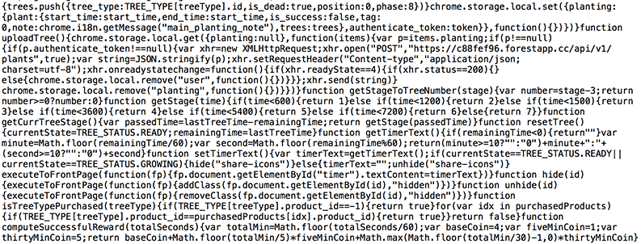

About
This tool was created to make it possible to anyone easily download .CRX files of Chrome Extensions and to extract source code of any Chrome Extension published at Chrome WebStore.
If you've found some bugs or you want request an improvement, please reach us via e-mail crxextractor@gmail.com!
Other contacts may be found on the contact page.
How that works?
File format
This tool parses .CRX version 2 format documented by Google. In general, .CRX file format consist of few parts:
- Magic header
- Version of file format
- Public Key information and a package signature
- Zipped contents of the extension source code
Magic header is a signature of the file telling that this file is Chrome Extension.
Using this header the operating system can determine the actual type of the file (MIME type is application/x-chrome-extension),
and how should it be treaten (is it executable? is it a text file?). Then the window system can show beautiful icon to the user.
In .CRX files the magic header has a constant value Cr24 or 0x43723234.
The version is provided by vendor. The version bytes are 0x02000000.
The next part of the file contains the length of the public key information and the length of a digital signature.
All .CRX packages distributed via Chrome WebStore should have public key information and digital signature in order to make possible for browser to check that the package has been transmitted without modifications and that no additions or replacements were made.
After all of the header stuff, typically ending up on 307'th byte, comes the code of extension, stored as zip-archive. So the remainder of the .crx file is the well-known .zip archive.

The header part of a .crx file selected on the picture above. Obviously, you can extract the remaining .zip archive "by hand" using any simple hex editor. In this example, we use handy HexFiend editor on Mac.
The CRX Extractor loads a file provided, checks a magic header, version and trims the file, so only .zip archive remains. Then it returns obtained .zip archive to user.
Further steps on diving into extensions source code
While playing around with content available on the Chrome WebStore you will find out that some of extensions contain well-documented and easy to read source code in HTML/CSS/Javascript. But some of them not. Like on the picture below.
Modifying a source code this way called minification (or obfuscation) and is done automatically with the help of special software tools called minifiers. This operation reduces the size of a footprint of an extension and make it loads faster. But sometimes this technique could be used to hide something interesting from prying eyes, making the reading and researching the behaviour of such programs very hard. In this way it is called obfuscation (and the corresponding tool called obfuscator).
There are a number of such tools, which you can easily get googled. Anyway, the investigating of minified and obfuscated code is much harder.
This tool allows you easily download CRX file extension and extract only Chrome Extension source code.
Tools used
This site is built using an awesome responsive CSS boilerplate called Skeleton.
The “open in new window” icon is a part of Typicons webfont, created by s-ings and distributed under the terms of CC BY-SA license.
All bytes choping-cropping made with Javascript and jQuery framework, using FileReader, DataView and other HTML5 features.
You are free to learn, modify, download, redistribute the code of this site. The source code could be obtained on the official GitHub repository of this project.